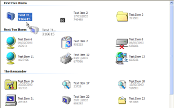

VB5 ListView Control (84K)
VB5 ListView Control (84K)
 VB5 ListView Demonstration (200K)
VB5 ListView Demonstration (200K)
 VB5 ListView Full Source (344K)
VB5 ListView Full Source (344K)
 VB6 ListView Control (85K)
VB6 ListView Control (85K)
 VB6 ListView Demonstration (196K)
VB6 ListView Demonstration (196K)
 VB6 ListView Full Source (341K)
VB6 ListView Full Source (341K)
 Bugs: 8 / 16
Bugs: 8 / 16
 Issues: 8 / 11
Issues: 8 / 11
 Questions: 0 / 0
Questions: 0 / 0
 20 Jun 2003
20 Jun 2003
Bug fixes and minor enhancements to the control:
The Selected property of a ListItem always returned false, meaning it was impossible to determine which items were selected in a multi-select ListView. Corrected. Same problem with the ItemCut property.
Icon property of ListItem set the icon of the next item along in the control. Fixed.
Position property added to the ColumnHeader object to allow the order of the column headers to be read and set programmatically.
Insert before parameter to the Add method of the ListItems collection was ignored. Corrected.
Setting a column alignment to right caused the column to be centred, and vice-versa. Fixed.
Mouse Up events were only generated for double-clicks. Now corrected.
A KeyDown event was generated when a KeyUp should have been. Fixed
Option to place the background image at a specified location rather than tile it added.
NoColumnHeaders property added to allow column headers to be hidden in Detail view.
Added a call to LoadLibrary on Shell32.DLL to prevent crashes when using a manifest.
Thanks to Ben Andersen, Ian Goodwin, Vasanth Raj, Greg Thomson, Frank Peters for the bug reports and code.
 Making VB Apply XP Visual Styles at Design and Debug Time
Making VB Apply XP Visual Styles at Design and Debug Time
 Adding XP Visual Styles to Your Visual Basic Application
Adding XP Visual Styles to Your Visual Basic Application
 Ole Guid and interface definitions (OleGuids.Tlb)
Ole Guid and interface definitions (OleGuids.Tlb)
 Subclassing Without The Crashes
Subclassing Without The Crashes
 vbAccelerator ImageList Control and Class v2.0
vbAccelerator ImageList Control and Class v2.0
 IShellFolder Extended Type Library Version 1.2 (ISHF_Ex.Tlb)
IShellFolder Extended Type Library Version 1.2 (ISHF_Ex.Tlb)

vbAccelerator ListView Control
Use the latest ListView features
This control provides an alternative to the VB ListView control and adds support for almost all of the new ComCtl32.DLL v6.0 features that are missing from the VB version: ListView grouping, Tile view with configurable sub-items, Multiple Work Areas and more.
ListView Control Features
The ListView control object model is shown below:

ListView Object Model
Here's a brief tour of features of these objects:
The Control
The vbalListViewCtl control provides access to the various object collections, raises events and also lets you configure the visual properties of the control. Most of these are standard, however some notable features are:
- View property supports Tile mode.
- ImageList property allows you to associate up to five image lists with the control: Tile, Large Icon, Small Icon, Header and State images. If you don't specify a Tile ImageList then the LargeIcon image list is used. Please note that MSCOMCTL.OCX (VB6 Windows Common Controls) ImageLists are not supported as the hImageList handle returned by this object is incorrect. This may be resolved in the future by an update from Microsoft (see KB).
cListItem
The cListItem object allows you to configure ListItems. Notable features are that you can add items to groups using the Group method.
cSubItem
The cSubItem object lets you configure the subitem text and image, and whether it displays in the Tile View using the ShowInTile property. When adding subitems to a tile, the items are displayed in the order that the ShowInTile property is called, and the number of items that are actually shown is configured using the control's TileViewItemLines property (whether everything is displayed depends on the available size of the tile).
cItemGroup
The cItemGroup allows you to configure groups added to the ListView. Once you've added a group you can specify whether it should be a Header or a Footer by using the GroupType property, specify the text alignment using the Align property and check whether the group is displayed or collapsed using the State property. Note when using groups that you can specify whether groups are enabled or disabled using the Enabled property of the cItemGroups collection and that if groups are enabled, only those items which have been added to groups are displayed.
cWorkArea
ListView work areas allow you to create multiple regions in the ListView for grouping objects together. Once you've added a WorkArea, you can move an item into it either by dragging or by using the ListItems Left and Top properties to place it in the region. Note WorkAreas do not clip the ListItems within them. This means that if you place too many items into an area for the size of the region, they just spill out off the bottom of the WorkArea.
Linking to ComCtl32.DLL v6.0
If you want to use new features like Tile View and Grouping then you will need to link your application to ComCtl32.DLL v6.0 using a Manifest. This is described in the articles Using Visual Styles and Making Visual Styles apply at design and debug-time. Note that ComCtl32.DLL is only available on Windows XP or above.
Important If you are running on a pre-XP system, then you will need to wrap calls to the Groups collection in an error handler, since this object will return Nothing.
EOE
There are a few omissions with the control at this point which are still being researched:
- State Icon Images not supported.
- Should be able to automatically create group headers in a sorted ListView.
- Insertion point marker in an AutoArrange ListView not displayed during dragging.
- Dragging multiple items in a multi-select ListView is not supported.
- Automatic drag-drop mode not automatic.
- Text is currently set using ANSI APIs
- Owner Custom-Draw of items is not provided for.